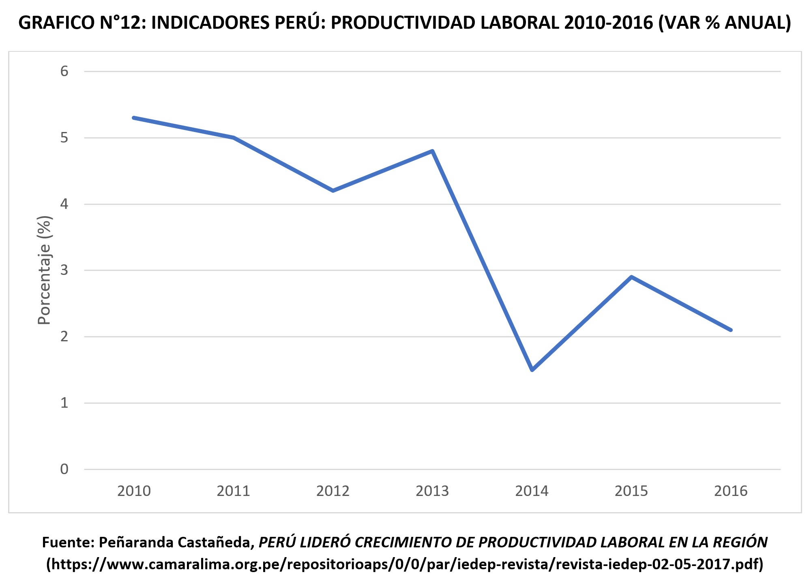
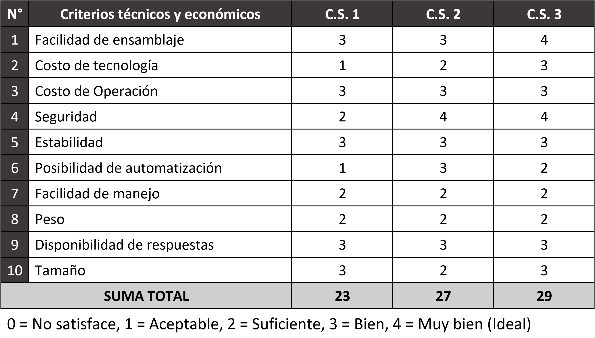

Deterioro del desarrollo Motor/Productividad.
El desarrollo motor es un proceso secuencial y continuo, donde las personas adquieren habilidades motoras organizadas y completas. Sin embargo, hay factores tanto biológicos como ambientales que ponen en peligro el normal desarrollo de estas habilidades [17]. Entre ellos uno de los principales es la anemia por deficiencia de hierro, en una revisión sistemática del 2001, personas que tienen un desarrollo motor en su niñez fueron anémicos. En este mal desarrollo hay funciones importantes que se ven afectadas como la de la lectura y escritura, que involucran tanto áreas cognitivas como motoras [18], que estas a largo plazo afectan en la capacidad para poder realizar labores de productividad del trabajo físico [19]. En el siguiente gráfico se muestra la relación de la anemia y la productividad de una persona.

Por otro lado, es posible decir que existe una relación de la anemia con el índice de productividad laboral. En el siguiente grafico se muestra el índice de productividad laboral de nuestro país, en el cual se aprecia que hubo variaciones y que estas se pueden inferir que tal vez un pequeño o gran parte con que estas personas tuvieron anemia de niños. Puesto que se puede apreciar en el cuadro 7 que el año 2012 al 2013 hubo un incremento del índice y durante esa misma temporada la anemia tuvo una disminución que se puede apreciar en el grafico 3 (prevalencia de anemia en algunos países y continentes para niños menores de 5 años)
Durante el 2016, la PL promedio se incrementó en 2,2% respecto al 2015, manteniéndose por tres años consecutivos con un incremento por debajo del 3% (ver Gráfico N°11). De la misma manera se puede relacionar con otros países como es el caso de Bolivia que para el 2016 tuvo un incremento en su índice de productividad y tuvo para el 2016 una disminución del índice anemia (ver Gráfico N°12).
Como se ven la tabla anterior el Perú destaca como la economía del bloque con mayor crecimiento de productividad laboral durante el 2016. Se pueden llegar a dichas inferencias puesto que la productividad laboral en muchos casos la productividad de una persona se debe a que estas tuvieron anemia de niños. Se vio la necesidad de hacer estas inferencias, puesto que no se encontraron investigaciones al respecto.